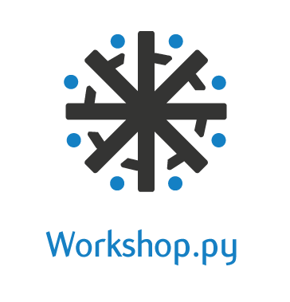
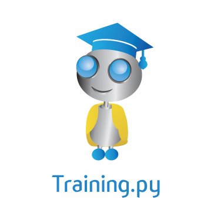

And on the pedestal these words appear:
"My name is Python, king of languages:
Look on my works, ye Mighty, and rejoice!”
Dacă poetul romantic Percy Bysshe Shelley ar fi trăit în zilele noastre, atunci cu siguranță poemele lui ar fi fost scrise în Python, limbajul ce are propriile lui înțelepciuni, scrise în slove de biți de către Tim Peters, în al său Zen of Python, setul de îndrumări ce cuprinde frumusețea limbajului în toată deplinătatea lui.
Python Week este un eveniment dedicat acestui frumos limbaj ce își propune, ca pentru o săptămână, să adune toți pasionații de tehnologie într-un mediu propice creației.
Următoarele evenimente vor avea loc în cadrul săptămânii Python:

Conference.py propune o zi întreagă de prezentări tehnice,
venite din partea unor speakeri implicați în proiecte open source de anvergură,
cu subiecte ce vor purta participanții prin cloud computing folosind Python,
in(tro)ducere în metaclase și sisteme de fișiere bazate pe Git, cuvintele cheie
ale evenimentului fiind open-source și bineînțeles, Python. Vrem ca această
conferință să rezoneze cu publicul pasionat de IT din Iași și nu numai,
astfel încât prin ea să reușim să formăm un mediu propice dezvoltării comunității
iubitorilor de Python și pasionaților de tehnologie din România. Prin subiecte interesate,
ancorate în lumea open source, vrem să deschidem totodată și apetitul persoanelor
tinere, dornice de învățarea unor lucruri noi, cât și a celor cu experiență în
dezvoltarea de software, ce vor să afle ultimele noutăți din lumea Python.
|

Precedat de Conference.py, prima conferință de Python a toamnei,
Workshop.py #2 se va desfășura pe data de 19 octombrie, fiind compus
din mai multe workshop-uri în paralel, cu subiecte variate, unele dintre
ele propunând aprofundarea conceptelor din prezentările din conferință.
Pentru fiecare workshop susținut, vom avea un mentor ce își va purta
elevii prin înțelegerea subiectului prezentat.
Unul din subiectele workshop-urilor va fi Introducere în Python, workshop
susținut de membri ai grupului RoPython, acesta fiind destinat începătorilor,
cât și celor care vor să învețe un nou limbaj. Participanții vor învăța de
ce alegerea acestui limbaj de programare îți poate schimba viața și viziunea
asupra ei, prin ușurința cu care îți permite să pui în practică idei și prin
filosofiile ce stau la baza lui.
|

Ideea acestui training este de a expune în fața micilor viitori
programatori și dezvoltatori, un limbaj de programare ușor de înțeles, rapid, robust
și stabil, un limbaj cu un impact enorm asupra tehnologiei și cu o varietate
nemaiîntâlnită în domeniu și toate acestea datorită simplității sintaxei, dar
mai ales comunității din spate și multitudinii de biblioteci. Echipa noastră
dorește să introducă încetul cu încetul, dar într-un mod sigur prin cantitatea imensă
de beneficii imediate și viitoare, acest limbaj de scripting în programa studiilor
(pre)universitare. Indiferent dacă intenția noastră de viitor va avea succes sau nu,
suntem siguri că elevii ce vor lua parte la evenimentele de acest gen vor avea multe
de învățat, lucruri ce vor fi de folos pe mai multe planuri, ce vor contribui la
îmbunătățirea “gimnasticii minții” și care îi vor ajuta pe participanți să-și materializeze
ideile într-un timp record, să vadă imediat în practică utilitatea unui algoritm și poate
chiar să realizeze aplicația mult visată.
|